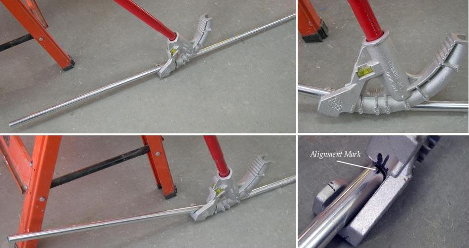

| Bending The Keel (2 of 2) | Menu Previous Page Next Page |
|
 Bending The Keel Stringer - Use an inexpensive electricians tube bender ( 3/4" model shown) to bend the keel to stem / stern at the correct angle. The stem angles are determined by the connection points of the chines and gunwales. This differs with each kayak. Mark the keel where the bend is to begin, and place a mark 1" forward of that point. The extra inch compensates for the alignment point on the bender. Place the tube and bender on the floor, and use hand or foot pressure to bend the tube. Bend less than you require, test the tube on the frame, and bend more if needed. It's important to have alignment marks on the tube and bender as It may take a few tries to get it right. You are finished bending when The keel / stem tubes just touch the gunwale tubes. |
|